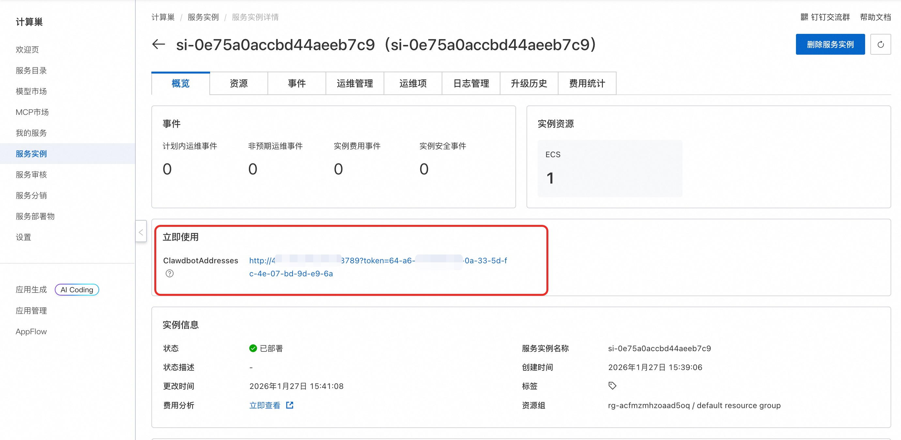

🌟 服务简介
OpenClaw（Clawdbot） 是一个现代化的机器人流程自动化（RPA）平台。OpenClaw（Clawdbot） 可以帮助用户自动化重复性的桌面任务，提高工作效率。OpenClaw（Clawdbot） 具有直观的用户界面和强大的自动化功能，支持多种应用场景。通过 OpenClaw（Clawdbot），您可以轻松创建、管理和执行自动化任务，无需编程经验。它还提供了丰富的集成接口，能够与其他系统和服务无缝协作。
🚀 部署流程
-
访问计算巢OpenClaw（Clawdbot）社区版部署链接，按提示填写部署参数（钉钉应用和企业微信机器人配置参数请参考下文获取）：

-
参数填写完成后可以看到对应询价明细，确认参数后点击下一步：确认订单。
-
确认订单完成后同意服务协议并点击立即创建进入部署阶段。
-
等待部署完成后进入服务实例详情页。
 -
点击服务地址并使用OpenClaw（Clawdbot）社区版。

📚 使用指南
配置钉钉机器人
1. 创建钉钉应用
创建钉钉应用需要钉钉账号有开发者权限。可以联系组织管理员获取钉钉开放平台的开发权限，具体操作请参见获取开发者权限。
1.1 创建应用
-
访问钉钉开放平台，点击创建。如果创建过应用但未展示应用开发指引，点击立即开始进入钉钉应用页面。
-
在应用开发的左侧导航栏中，点击钉钉应用，在钉钉应用页面右上角点击创建应用。

-
在创建应用面板，填写应用名称和应用描述，在应用图标上传图标，完成后点击保存。
1.2 查看应用 Client ID 和 Client Secret
在左侧菜单选择凭证与基础信息，复制 Client ID 和 Client Secret。

2. 配置钉钉机器人
2.1 配置钉钉机器人
-
访问钉钉应用列表。找到刚刚创建的应用，点击应用名称进入详情页面。
-
在添加应用能力页面，找到机器人卡片，点击添加。
在机器人配置页面，打开机器人配置开关，可以参考下图完成配置。消息接收模式请选择 Stream 模式，然后单击发布。

3.2 发布应用版本
应用创建完成后，如果需要将应用供企业内其他用户使用，需要发布一个版本。
-
单击应用开发，在钉钉应用页面，点击目标应用。

-
在目标应用开发导航栏，单击版本管理与发布，在版本管理与发布页面，点击创建新版本。进入版本详情页面，输入应用版本号和版本描述信息，选择合适的应用可见范围，完成后点击保存。并在弹窗中点击直接发布。

3. 在控制台配置 channel 参数
在 计算巢控制参数 中填入钉钉应用的 Client ID 和 Client Secret，并创建服务实例。
4. 测试机器人
服务实例创建完成后，你可以创建群聊或在已有群聊中添加机器人，并与机器人对话，查看效果。
更改百炼模型请参考如何更改 OpenClaw 调用的模型。
-
在钉钉群管理中添加机器人。进入钉钉群群设置页面，点击机器人卡片区域，在机器人管理页面，点击添加机器人。在添加机器人的搜索文本框中输入目标机器人名称，并选中要添加的机器人。点击添加，完成后再点击完成添加。
-
在钉钉群中 @机器人 进行交流互动。也可以在钉钉的搜索栏中，输入机器人名称后，在功能页检索到对应机器人，进行私聊互动。

配置企业微信机器人
-
访问企业微信管理后台，在左侧导航栏单击 安全与管理 > 管理工具 > 智能机器人。单击创建机器人。
-
通过API模式创建智能机器人:
在页面底部单击API模式创建。 分别单击Token和Encoding-AESKey后的随机获取，保存Token和Encoding-AESKey。
在计算巢创建页面输入获取的Token和Encoding-AESKey，等待服务实例创建完成，回到API模式创建页面，填入URL，Token和Encoding-AESKey字段保持不变，单击创建。
URL的格式为http://IP地址:18789/webhooks/wecom。IP地址需要替换为OpenClaw服务器的IP地址。
- 方案验证:
在群聊中点击添加群成员，搜索创建完成的机器人名称，加入群聊

在已添加机器人的群中@机器人即可实现流式对话，效果如下：
如何使用OpenClaw（Clawdbot）
更多用法请参考OpenClaw（Clawdbot）官网文档。